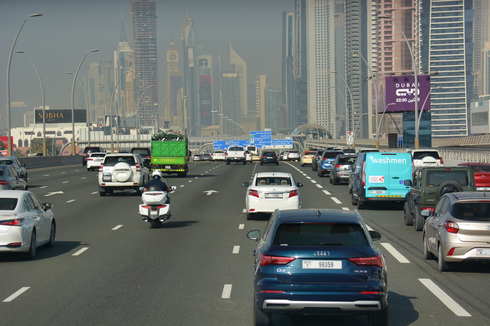
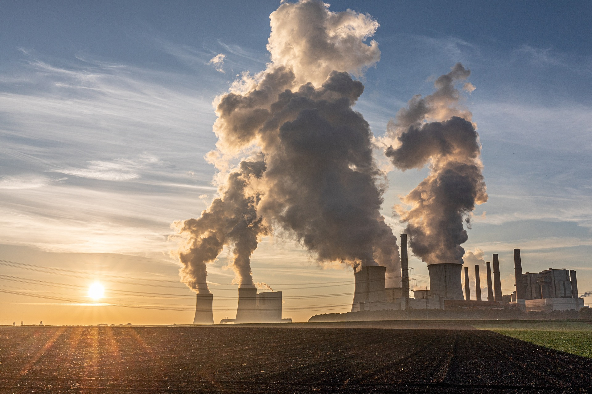
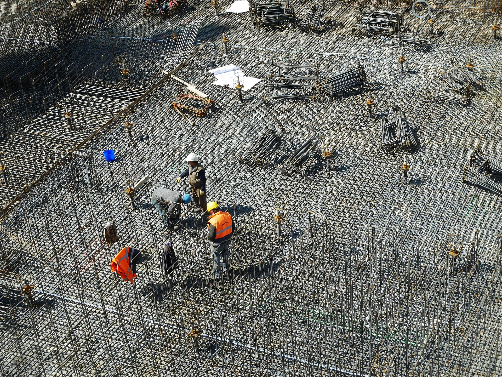
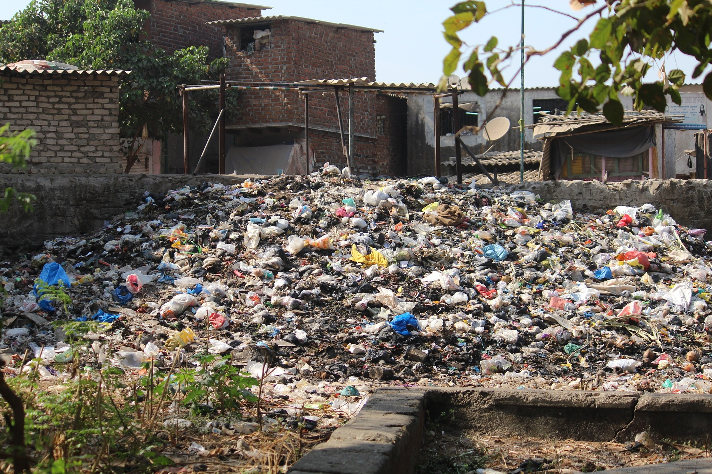
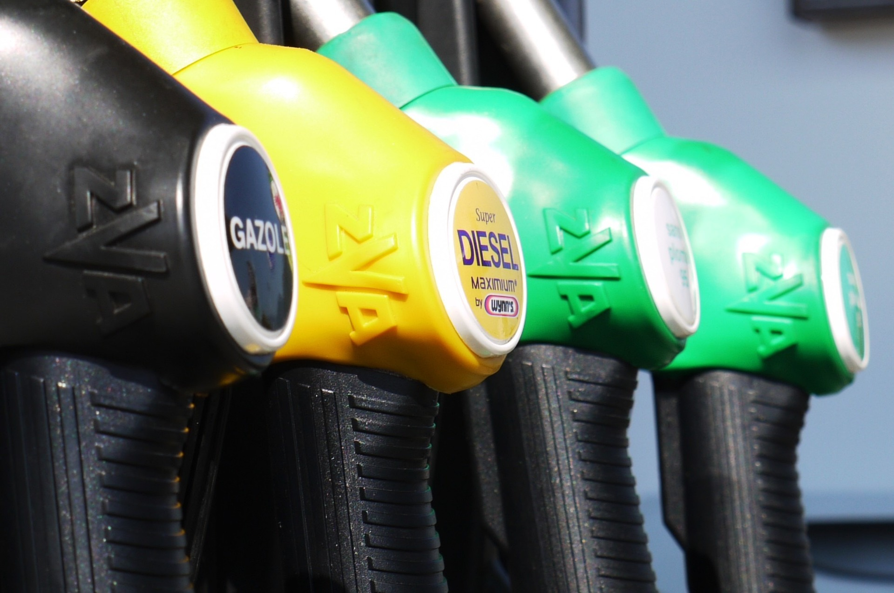
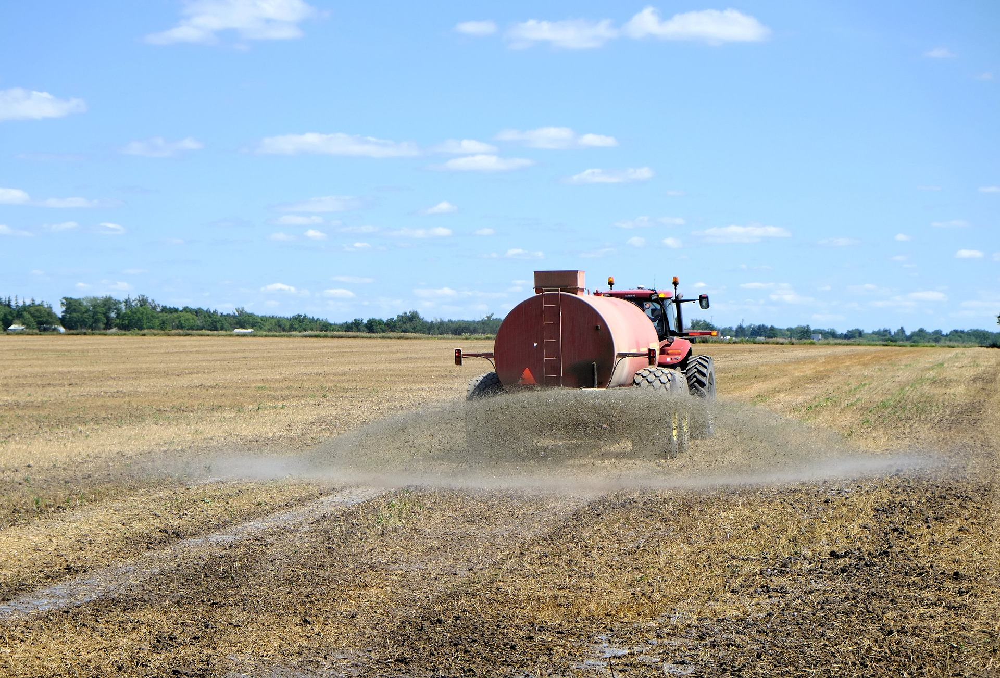
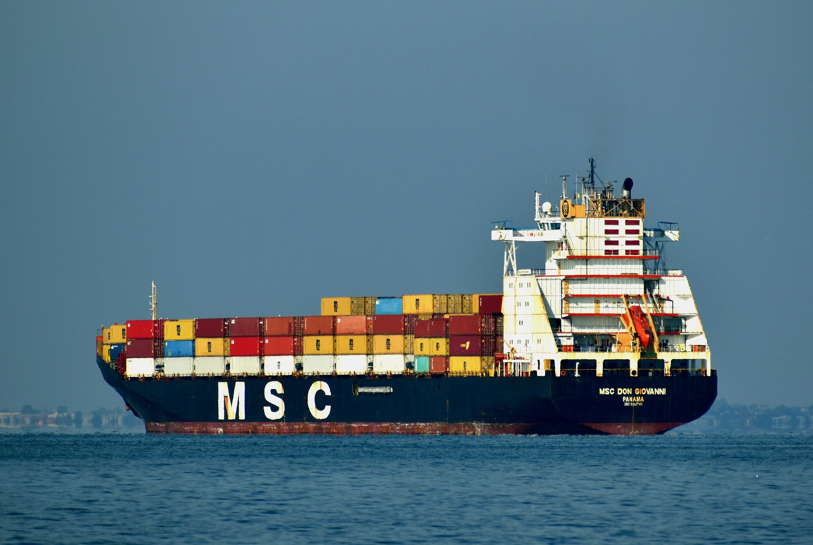
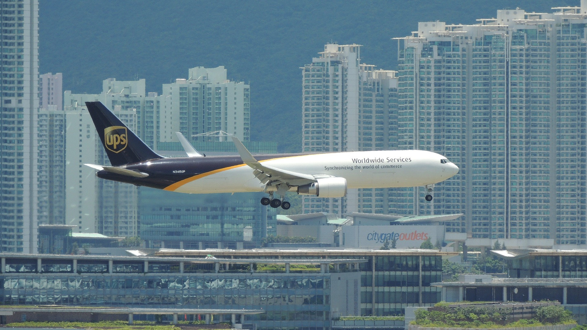

Környezetszennyezés
A környezetszennyezés olyan folyamat, amely során a környezetben lévő anyagok, anyagcseretermékek,
energia vagy zaj olyan szinten jelennek meg, amelyek veszélyeztetik az élővilágot, az
ökoszisztémákat és az emberi egészséget. A környezetszennyezés sokféle formában jelentkezik, például
légszennyezés, vízszennyezés, talajszennyezés és zajszennyezés formájában. Az ipar, a közlekedés, a
mezőgazdaság és a háztartások mind hozzájárulnak a környezetszennyezéshez. A környezetszennyezés
jelentős hatással van az életminőségre és az emberi egészségre, ezért nagyon fontos, hogy megfelelő
intézkedéseket tegyünk a környezetszennyezés csökkentése érdekében, és elősegítsük a fenntartható
fejlődést, amely lehetővé teszi az emberi tevékenységek és a környezet egymás mellett való
létezését.
Néhány környezetvédelmi szervezet oldala:
Óvd Te is a
környezeted!!!
Legszennyezőbb folyamatok

Közúti közlekedés
Az autók és egyéb járművek károsanyag-kibocsátása jelentős mértékben hozzájárul a légszennyezéshez, a
globális éghajlatváltozáshoz és az egészségügyi problémákhoz, mint a tüdőbetegségek és a
szívbetegségek.

Energia előállítás
Az energia előállítása fosszilis tüzelőanyagokból, mint a szén, az olaj és a gáz, jelentős mértékben
hozzájárul a globális felmelegedéshez, a tengerszint emelkedéséhez, a szmoghoz és az egészségügyi
problémákhoz.

Építkezések
Az építkezések során előforduló földmunkák, építőanyagok előállítása és építkezési tevékenységek nagy
mennyiségű szemetet, zaj- és por szennyezést okoznak, ami negatív hatással van a környezetre és az
emberek egészségére.

Szemétlerakók
A szemétlerakókban található hulladékok bomlása és lebomlása káros gázokat bocsát ki, mint például a
metán és a széndioxid, amelyek negatív hatást gyakorolnak a klímaváltozásra és a környezetre.

Ipari tevékenységek
Az ipari tevékenységek során kibocsátott károsanyagok, mint például a nehézfémek, a mérgező
vegyületek és a szennyező anyagok, jelentős mértékben hozzájárulnak a környezetszennyezéshez és az
egészségügyi problémákhoz.
Távközlési eszközök
A digitális eszközök előállítása és működtetése nagy mennyiségű energia és víz felhasználásával jár,
valamint a hulladékkezelés problémáját is jelentik.

Élelmiszertermelés
Az élelmiszertermelés során felhasznált műtrágyák és növényvédő szerek, valamint az állattenyésztési
tevékenységek nagy mennyiségű szennyezőanyagot bocsátanak ki, amelyek káros hatással vannak a
környezetre és az egészségre.

Hajózás
A hajózás során a hajók káros gázokat és olajat bocsátanak ki, amelyek jelentős hatást
gyakorolnak az élővilágra, a tengeri ökoszisztémára, valamint az emberi egészségre. Az árufuvarozó
hajók különösen nagy mennyiségű károsanyagot bocsátanak ki, és a hajóroncsok illetve
újrahasznosításuk is problémát jelent a környezet számára.

Repülés
A repülőgépek káros gázokat bocsátanak ki, amelyek jelentős hatással vannak a levegő
minőségére, a klímaváltozásra és az egészségre. Az iparág gyors növekedése és a folyamatosan növekvő
utazási igények miatt a repülés által kibocsátott szennyező anyagok mennyisége is folyamatosan
emelkedik.
Textilipar
Az iparág nagy mennyiségű víz- és vegyi anyag felhasználásával és a szennyező anyagok kibocsátásával jár, amelyek negatív hatással vannak a környezetre és az emberi egészségre. Az egyik legnagyobb probléma a textiliparban az egyszer használatos ruházat tömeges előállítása és eldobása, amelynek jelentős szerepe van a szemétlerakódásban és a hulladékproblémákban. A fenntartható textilipar, amely környezetbarát anyagokat és gyártási folyamatokat használ, valamint az újrahasznosítás és a környezettudatos vásárlás is segíthet a textilipar okozta károk csökkentésében.